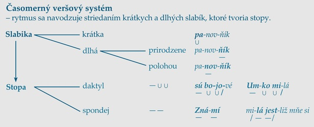

Klasicizmus je literárny smer, ktorý napodobňoval formy antického umenia, riadil sa podľa prísnych estetických pravidiel a noriem. Vychádzal z filozofie racionalizmu, cieľov osvietenstva a ideálov feudálneho absolutizmu, ktorý racionalisti považovali za absolútne dokonalý spoločenský poriadok. Obdobie klasicizmu rozderujeme na osvietenský a vrcholný klasicizmus.
V období formujúceho sa klasicizmu sa stal určujúcim filozofickým smerom racionalizmus. Filozofický smer uprednostňoval hodnotu ľudského rozumu, myslenia, vedy, skúsenosti
a výskumu. Racionalizmus nadviazal na humanistické ideály a snahy. pod vplyvom racionalizmu sa v Európe rozvinulo do širokých spoločenských vrstiev myšlienkové hnutie
osvietenstvo. Prvýkrát v histórii išlo o „osvietenie" širokých meštianskych a dokonca ľudových vrstiev vedou, o demokratizáciu spoločnosti presadzovaním rovnosti medzi ľuďmi.
Spolu s osvietenými teológmi sa aj osvietenskí klasicisti snažili vo svojich dielach zbaviť zaostalosti, cirkev tmárstva (tmár - odporca pokroku, spiatočník) a ľud povier
a nevedomosti, čím vyvolávali odpor a odmietanie.
Francúzski filozofi, vedci a spisovatelia (D. Diderot, J. ďAlembert, F. M. Voltaire, p. H. Holbach, J. J. Rousseau) sústredili všetky dovtedy dostupné vedecké fakty
do prvej encyklopédie na svete. Bola dôkazom, že svet vďaka rozumu napreduje a pokrok vedie k novému poriadku. V encyklopedických dielach autori syntetizovali dobové
poznatky z viacerých vedných odborov. V strednej Európe považujeme za encyklopédiu dielo Od J. A. Komenského: Orbis sensualium pictus, M. Bela: Historicko-zemepisná
vedomosťo súvekom Uhorsku..., ale aj didaktické dielo pre deti od J. Kollára: Čítanka aneb Kniha k čítání pro mládež ve školách slovanských měst a v dědinách, ako aj
encyklopedické dielo z oblasti určené ľudu od J. Fándlyho: Piľní domajší a poľní hospodár.
Vo vrcholnom klasicizme sa naplno rozvinuli znaky tohto umeleckého smeru. Podobne ako v renesancii aj v klasicizme považovali autori antické umenie za ideál umenia. Krásne
mohlo byť len to, čo pravdivé a mravné, pod vplyvom racionalizmu uprednostňovali rozum pred citom, spoločenský či štátny záujem, povinnosti pred láskou (hlavne v dráme).
Autori napodobňovali prírodu a dbali na pravdepodobnosť spracovaného pribehu, Svoje postavy nechávali zmietať sa medzi vášňou a povinnosťou. Často jednoduchý dej diela poskytol
priestor na utrpenie postáv, ktoré nemajú dosť síl, aby zmenili zamotané okolnosti, v ktorých sa ocitli. Riešenie musí prísť zhora - na scénu zvyčajne zavíta kráľ.
Žánre sa v období klasicizmu delili na vysoké (napr. óda, epos, epigram, tragédia) a nízke (bájka, satira, komédia a próza ako celok). Lyrickoepická poézia, tragikomédia ti iné
hybridné žánre neboli povolené. Estetické požiadavky klasicistickej poetiky formovali aj príjemcovia textov - na začiatku to bola hlavne francúzska aristokracia a vzdelanci,
preto postavami vo vyšších epických a dramatických žánroch boli kráľ, krárovná, šľachtic, rytier, vysoký duchovný, ale aj vysokopostavení ľudia. Neurodzené postavy (úžerník,
sluha, dohadzovačka) sa mohli nachádzať len v nízkych žánroch.
V dielach vrcholného klasicizmu sa posilnila estetická funkcia literárnych textov a oslabil sa didaktický a výchovný zámer literárnych diel. Znaky klasicistickej literatúry sa
najzreternejšie prejavili v poézii a dráme aj preto, lebo autori sa priamo napojili na antické a renesančné vzory. V slovenskej klasicistickej literatúre napomohla k tomuto
trendu kodifikácia bernolákovskej slovenčiny - bernolákovský jazyk dokázal plniť náročné kritériá prozódie časomerného verša a mohli tak vzniknúť vysoké klasicistické žánre.
Osvietenci podporovali rozvoj remeselnej a priemyselnej výroby, čo predpokladalo aj vzdelanie širších vrstiev spoločnosti. V prvej fáze klasicizmu (osvietenský klasicizmus) tak
podnietili vznik didakticky zameranej literatúry, napr. osvietenských románov a kratších próz spojených s cestovaním (rôzna forma cestopisov a denníkov z ciest), spoznávaním
cudzích krajín, exotických národov, rastlín i zvierat.
Motív cesty, putovania a blúdenia je v európskej literatúre prítomný od antických čias. Po postupnom doznievaní osvietenských snáh sa objaví aj v prvých dobrodružných románoch.
Napr. Daniel Defoe v dobrodružnom románe Robinson Crusoe čitateľa ešte „vzdeláva", ako sa dá stroskotanie prežiť v mravnosti, viere a v tvrdej práci. Iní autori už
využívajú dobrodružný až fantastický dejový rámec na tvrdú kritiku pomerov vo svojich rodných krajinách. Napr. Voltaire v diele Candide kritizuje lúpežné vojny,
vykorisťovanie kolónií či neudržateľné pomery francúzskeho súdnictva. Jonathan Swift v utopistickom románe Gulliverove cesty dovedie počas vymyslenej odysey
Gullivera medzi trpaslíkov Liliputov i medzi obrov. Gulliver síce neúnavne propaguje civilizáciu, z ktorej prichádza, ale aj nastavuje zrkadlo súdobým anglickým pomerom plným
politických o moc a majetok a predstavuje vlastnosti ideálneho panovníka. J. Swift svojím utopistickým románom odštartoval prúd literatúry, ktorý sa v 20. stor. vykryštalizoval
ako science-fiction (jeho trpaslíci hovoria umelo vytvoreným jazykom, v texte využíva mapy, náčrty, ako napr. autor fantasy literatúry 20. stor. J. R. R. Tolkien).
Osvietenskí spisovatelia využili svoj talent na napísanie praktických prozaických príručiek pre roľníkov, včelárov, ovocinárov... Na pobavenie ľudových vrstiev poslúžili
politicky zamerané pamflety (básnické i prozaické hanlivé a útočné texty), ale aj humorné príbehy, anekdoty a pre svoj didaktický a výchovný charakter hlavne bájky (v tomto
období častejšie veršované, napr. Francúz Jean de La Fontaine), často prevzaté z iných literatúr, hlavne z antickej literatúry. V slovenskej ľudovej slovesnosti v tomto
období vznikajú na pobavenie a poučenie detí i dospelých fantastické a zvieracie rozprávky a povesti. Rovnako sa v nich dajú vystopovať motívy z iných literatúr, ktoré sa
obohacujú domácimi (pôvodnými).
Narodil sa v Borskom Mikuláši v rodine roľníka, študoval teológiu v Trnave, pôsobil ako katolícky kňaz, 29 rokov strávil na chudobnej fare v Maduniciach. Pri požiari mu
vyhorela fara, pre záchvat dny nestihol pred ohňom ujsť a poškodil si zrak. Dožil u priateľa na Dobrej Vode. Tam ho v roku 1843 navštívili Ľ. Stúr, M. M. Hodža, a J. M.
Hurban, aby mu oznámili, že sa dohodli na novom spisovnom jazyku. Písal poéziu a prekladal antickú poéziu do Bernolákovskej slovenčiny.
Ján Hollý napísal tri rozsiahle epické eposy s historickou témou z obdobia Veľkej Moravy: Svatopluk, Cirillo-Metodiada a Sláv, ktorými sa zaradil na
čelo slovenskej klasicistickej literatúry.
Epos Sláv sa nepridržiava historických faktov, autor si domýšra dej i slovanské mytologické bytosti v zmysle klasicistickej požiadavky:
pravdivá alebo pravdepodobná téma. J. Hollý podporoval svojou básnickou tvorbou sebavedomie formujúceho sa moderného slovenského národa na začiatku 19. storočia. Majstrovským
spôsobom oživil a súčasníkom priblížil dávne deje spod Tatier (Tatry ako symbol územia Slovenska). Pripomenul (v súlade s vtedajšou snahou nájsť slávnu minulosť Slovákov a
zaradiť ich medzi rovnocenné moderné národy) „velké kráľovstvo Slovákov" a prvých vierozvestcov a učiteľov Konštantína a Metoda. K jeho tvorbe sa ako k nádeji upínali ďalšie
generácie slovenských vzdelancov. Diela napísané v Bernolákovom jazyku sa stali dôkazom, že slovenčina patrí medzi vyspelé kultúrne európske jazyky, čo Hollý dokázal aj početnými
prekladmi z latinčiny.
Dielo Svatopluk je veľká epická skladba - hrdinský epos. Autor v ňom dodržiava postupy antických autorov, predovšetkým Homéra a Vergília, napr. tu nájdeme rozsiahle
opisy turnajov, hostín. Aj v Hollého epose sa prelína svet ľudí a svet bohov - okrem pohanských a slovanských bohov sú prítomní aj kresťanskí svätí (Konštantín, Metod). Z pekiel
prichádza na Devín pohanský boh (Černobog), ktorého modly Svätopluk zakázal uctievať. Epos Svatopluk sa začína propozíciou / vyjadrením zámeru autora - stručne naznačenou
dejovou líniou a invokáciou / vzývaním Múzy. J. Hollý využíva časomerný veršový systém, ktorý má pôvod v antike.
Časomerný veršový systém je starobylý, uplatňoval sa už v starovekej poézii. Jeho názov hovorí, že sa zakladá na „meraní času", využíva dĺžku slabiky, t. j. striedanie
krátkych a dlhých slabík. Z našich autorov v ňom vynikal hlavne J. Hollý, ktorý písal v Bernolákovom jazyku, kde neplatilo pravidlo o rytmickom krátení, a teda mohli za
nasledovať aj dve dlhé slabiky. Dlhá slabika meria / trvá dvakrát toľko ako krátka. Hollý si určil aj pravidlá: dlhá slabika môže byť prirodzene dlhá (samohláska
označená dĺžkou: milá) alebo polohou dlhá (ak po samohláske nasledujú aspoň dve spoluhlásky: Um). Ak sa v slabike nachádzala po samohláske ako druhá
r, l, h - autor sa rozhodol, či bude slabiku považovat za dlhú, alebo krátku.
V próze vytvára členitosť textu veta (grafická podoba: najčastejšie text zaberá rozsah celého riadka strany), veta alebo niekolko viet vytvárajú odsek. V básnickom diele
člení text verš (grafická podoba: krátky alebo dlhší riadok básne, zvyčajne nie cez celý rozsah strany). Istý pravidelne sa striedajúci počet veršov vytvára osobitný
celok - strofu. Každý verš má svoju vnútornú výstavbu. Verš sa skladá z menších jednotiek, ktoré sa nazývajú stopy (v časomiere tvorené dlhými a krátkymi
slabikami). Tým, že sa vo verši pravidelne opakujú rovnaké stopy, sa v básni rytmus. Norma, ktorá určuje, koľko bude mať ideálny verš počet slabík a koľko bude mat
slabičných dĺžok, sa nazýva metrum.

V 17. a 18. storočí zažíva dráma v európskom kontexte svoj zlatý vek. Slovo autora bolo vyložené na literárny piedestál a herectvo bolo považované iba za reprodukčné umenie,
komunikačný kanál, ktorým sa slovo dostalo k prijímateľovi. Prevládala teda deklamácia textov, očakával sa štylizovaný nadnesený - patetický - prednes. Herec na seba
neupozorňoval ani prehnaným pohybom. S ohľadom na krásu, korektnosť a slušnosť na javisku nikdy netiekla ani pomyselná krv. Kedže sa slovo cenilo viac než akčnosť na javisku,
v klasicistickej hre prevládajú monológy alebo dialógy s dlhými replikami zúčastnených postáv.
Pri povahokresbe autori nevytvárali individuality, ale nadčasové, všade sa vyskytujúce všeobecné charaktery človeka (vlastenec, udatný bojovník, skupáň, pokrytec). Postavy
neboli výnimočné, jedinečné, plné protikladov, nevyrastali v typickom prostredi a neboli závislé od spoločenských podmienok. Napríklad kráľ musel byť podľa všeobecne platnej
schémy „od prírody" čestný, múdry, uvážlivý...
Aj v klasicistických dramatických dielach bola požiadavkou jednota miesta, času a deja. Jednotlivé dejstvá sa hrajú na tej istej scéne, všetko sa odohrá v ten istý deň
a v deji chýbajú epizódne príbehy. Požiadavka pravdepodobnosti - priblíženia sa k pravde - vylučovala, aby sa v reálnom čase (napr. počas večerného predstavenia) striedali
na scéne dni a noci.
V tragédii Horácius (veršovaná tragédia) autor siahol po antických bájach a rímskych dejinách historika Tita Livia - vzájomný spor dvoch miest mal rozhodnúť súboj trojčiat
z Ríma a trojčiat z Alby Longy. Už prítomnosť trojčiat na oboch stranách nás upozorňuje na to, že pravdepodobné je len historické jadro a príbeh je prevzatý zo starovekého
mýtu.
Teoretici klasicizmu považovali nové pravidlá za dokonalé a očakávali, že budú nemenné. V dramatickej literatúre sa však o zmenu čitateľského vkusu postaral sám Denis Diderot, ktorý žiadal zmenu pravidiel a kritérií na drámu z vysokej tragédie na meštiansku drámu, ktorá by lepšie zachytávala reálny život. Nadnesený a viazaný jazyk klasicistickej tragédie vystriedal živý národný jazyk a prozaický dialóg zrozumitelhý širším vrstvám publika. Už pred ním však siahol po nízkom žánri - po komédii - Moliére. Popri francúzskej komédii slávila v tomto období úspechy aj talianska commedia dell´arte.
Moliére - vlastným menom Jean-Baptiste Poquelin, získal právnické vzdelanie, pôsobil ako herec i riaditeľ divadla. Viackrát mu zakázali účinkovať, ale mal aj
možnosť organizovať predstavenia pre krárovskú rodinu Ľudovíta XIV. Pri predstavení Zdravý nemocný, kde hral hlavnú úlohu, mu prišlo nevoľno a zomrel. V Comédie francaise je
vystavené kreslo, v ktorom naposledy na scéne sedel. Napísal vyše 30 hier, z ktorých 16 je aj v slovenskom preklade a takmer bez prestávky sú niektoré z nich inscenované.
Lakomec - patrí k nižším žánrom, je to neveršovaná komédia v 5 dejstvách, využíva ostrú satiru, jazykový a situačný humor. Klasicistické dielo spracúva antický
námet, zachováva jednotu miesta, času a deja - odohráva sa v dome Harpagona v priebehu jedného dňa. Prostredie a postavy sú meštianske. Autor zaplnil komédiu osobitnými
postavičkami sluhov, ktorí sú verne na strane svojho pána a svojím konaním práve oni posúvajú dej dopredu. Autor využíva hyperbolizáciu vlastností postáv (Harpagon je
prehnane skúpy, Frozína je až príliš aktívna). Moliérovým prínosom do svetovej literatúry je okrem iného i často využívaný princíp zámeny postáv (napr. Valér sa vydáva za
sluhu, Anzelm je nepoznaný neapolský šľachtic a nepoznaný otec Valéra a Marianny), ktorý budú napodobňovať mnohí autori.
Zápletka nie je dôležitá, v popredí je pohľad na lakomca zo všetkých strán. Konflikt nastáva pri stretoch záujmov detí a skúpeho otca. Rozuzlenie je
nečakané, prekvapujúce (Anzelm je stratený otec Valéra, Marianna je Valérova sestra a Anzelmova dcéra). Moliére nahradil prejavy postáv sviežim a vtipným dialógom.
Hlavné postavy:
Osvietenstvo na území Slovenska (koniec 18. stor.) sa v mnohom odlišuje od západoeurópskeho osvietenského hnutia pre iné podmienky, v ktorých sa formovalo a rozvíjalo. Kedže
propagátormi nových osvietenských názorov boli vzdelaní ľudia, na území Slovenska to mohli byť iba kňazi alebo učitelia na cirkevných školách. V slovenských podmienkach v Uhorsku
teda nikdy nešlo o materialistických a idealistických filozofických názorov, ale o prácu medzi ľudom, o starostlivosť o jazyk a národnú kultúru, o podporu reforiem osvietenských
panovníkov.
Slovenskí osvietenskí klasicisti v dielach nadšene podporili reformy Jozefa II., ktorý na cestách po Európe videl hospodársky a vzdelanostný náskok cudzích krajín, a preto
presadzoval doma radikálne zmeny. Centralistickí úradníci z Viedne začali uprednostňovať ako úradný jazyk nemčinu i na územiach, kde nemecky hovoriace obpaterstvo nežilo.
Germanizačné snahy vyvolávali iniciatívu podporiť vlastné národné jazyky vo všetkých častiach monarchie - aj slovenskí vzdelanci sa pokúsili presadiť v spisbe slovenský spisovný
jazyk. Formuje sa prvá generácia národného obrodenia, hnutia, počas ktorého postupne vzniká novodobý slovenský národ.
Reformy Márie Terézie a jej syna Jozefa II.:
Bol významný slovenský jazykovedec, ústredná postava Slovenského učeného tovarišstva - prvého celoslovenského kultúrneho národného spolku, bol prvý kodifikátor spisovnej slovenčiny 1787. Živým rečovým podkladom Bernolákovho uzákonenia spisovnej slovenčiny bola tzv. kultúrna západoslovenčina. Zásady bernolákovčiny:
Bol katolícky kňaz, pochádzal z chudobnej roľníckej rodiny, študoval teológiu v Budíne a v Trnave.
Diela:
Jozef Ignác Bajza bol prozaik, básnik, autor náučných náboženských spisov, vášnivý polemik v otázkach slovenského spisovného jazyka. Patril k hlavným predstaviteľom slovenskej
osvietenskej klasicistickej literatúry. Autor prvého pôvodného slovenského románu. J. I. Bajza svojou činnosťou a dielami podporil jozefínske reformy.
Diela:
Kollár patrí do klasicizmu, i keď v jeho tvorbe sú aj prvky preromantizmu. Autori chceli pozdvihnúť národné povedomie Slovákov, preto sa často obracali do minulosti, hlavne do obdobia Veľkej Moravy. Písali svoje diela národným jazykom, v tomto období Bernolák uzákonil l. podobu spisovnej slovenčiny. Vytvoril myšlienku všeslovanskej vzájomnosti - propagoval kultúrnu spoluprácu Slovanov. Chcel, aby Slovania mali oporu v Rusku. Tvrdil, že existuje československý národ a nie český a slovenský, preto odmietol Bernolákovu slovenčinu a naďalej písal jazykom slovenských evanjelikov: biblickou češtinou. Slovanov delil na 4 kmene: poľský, ruský, srbochorvátsky a československý. Vystúpil proti uzákoneniu štúrovčiny dielom Hlasové o potřebě jednoty spisovného jazyka pro Čechy, Moravany a Slováky.
Stredná priemyselá škola dopravná, Jakub Cuninka, Lukáš Hovanec ©